Render Lab — emulator + desktop
| variant | gpu / mode | verdict | shader errors | black % | fps |
|---|
| compat | desktop-opengl3-llvmpipe | PASS_3D_AND_2D | 0 | 0.0 | 23 |
| compat | host | PASS_3D_AND_2D | 0 | 0.0 | 8 |
| compat | lavapipe | PASS_3D_AND_2D | 0 | 0.0 | 9 |
| compat | lavapipe | PASS_3D_AND_2D | 0 | 0.0 | 8 |
| lowlim | host | PASS_3D_AND_2D | 0 | 0.0 | 8 |
| lowlim | lavapipe | PASS_3D_AND_2D | 0 | 0.0 | 7 |
| lowlim | lavapipe | PASS_3D_AND_2D | 0 | 0.0 | 7 |
| mobile | desktop-vulkan-lavapipe | PASS_3D_AND_2D | 0 | 0.0 | 17 |
| compat | host | BLACK_OR_WRONG | 0 | 0.16 | 7 |
| lowlim | host | BLACK_OR_WRONG | 0 | 0.16 | 6 |
| lowlim | host | BLACK_OR_WRONG | 0 | 0.16 | 6 |
| compat | host | CRASH_OR_DEAD | 0 | 0.4 | None |
| compat | lavapipe | CRASH_OR_DEAD | 0 | 0.4 | None |
| lowlim | lavapipe | CRASH_OR_DEAD | 0 | 0.4 | None |
res-desktop-opengl3-llvmpipe — PASS_3D_AND_2D
method=gl_compatibility driver=opengl3 adapter=llvmpipe (LLVM 20.1.2, 256 bits) vendor=Mesa api=4.5 (Core Profile) Mesa 25.2.8-0ubuntu0.24.04.2 os=Linux
OpenGL API 4.5 (Core Profile) Mesa 25.2.8-0ubuntu0.24.04.2 - Compatibility - Using Device: Mesa - llvmpipe (LLVM 20.1.2, 256 bits)
pixels: {"black_pct": 0.0, "red_pct": 5.25, "blue_pct": 2.18, "green_pct": 56.2, "yellow_pct": 10.94, "size": [720, 1280]}
emulator: desktop-xvfblogcat ·
result.jsonres-emu-compat-host-r2 — PASS_3D_AND_2D
method=gl_compatibility driver=opengl3 adapter=Android Emulator OpenGL ES Translator (llvmpipe (LLVM 20.1.2, 256 bits)) vendor=Google (Mesa) api=OpenGL ES 3.1 (4.5 (Core Profile) Mesa 25.2.8-0ubuntu0.24.04.2) os=Android
OpenGL API OpenGL ES 3.1 (4.5 (Core Profile) Mesa 25.2.8-0ubuntu0.24.04.2) - Compatibility - Using Device: Google (Mesa) - Android Emulator OpenGL ES Translator (llvmpipe (LLVM 20.1.2, 256 bits))
pixels: {"black_pct": 0.0, "red_pct": 5.87, "blue_pct": 2.74, "green_pct": 55.05, "yellow_pct": 8.75, "size": [1080, 2400]}
emulator: Pkg.Revision=37.1.11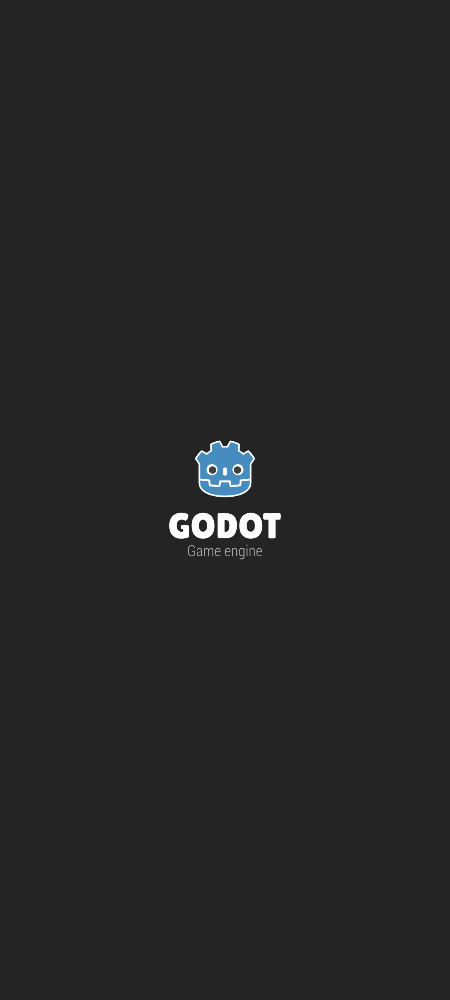
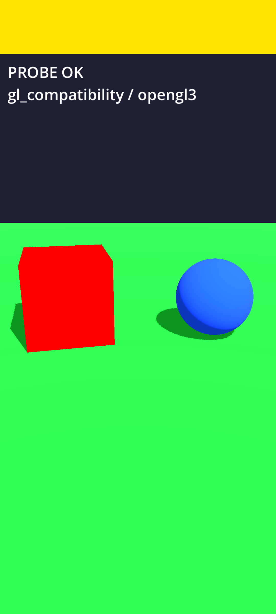
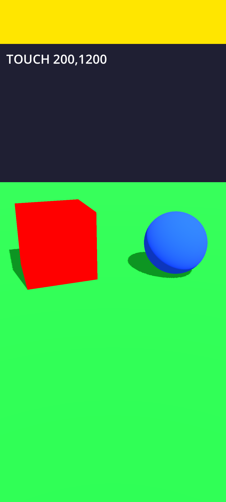
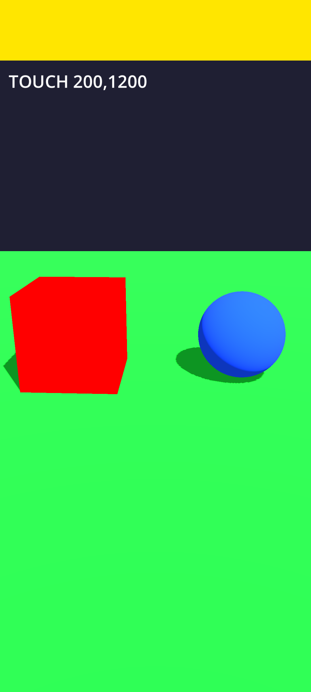
·
result.jsonres-emu-compat-lavapipe-r2 — PASS_3D_AND_2D
method=gl_compatibility driver=opengl3 adapter=Android Emulator OpenGL ES Translator (ANGLE (Mesa, Vulkan 1.4.318 (llvmpipe (LLVM 21.0.0 256 bits) (0x00000000)), llvmpipe-25.2.4)) vendor=Google (Google Inc. (Mesa)) api=OpenGL ES 3.1 (OpenGL ES 3.1.0 (ANGLE 2.1.17841 git hash: 5fa2e61da947)) os=Android
OpenGL API OpenGL ES 3.1 (OpenGL ES 3.1.0 (ANGLE 2.1.17841 git hash: 5fa2e61da947)) - Compatibility - Using Device: Google (Google Inc. (Mesa)) - Android Emulator OpenGL ES Translator (ANGLE (Mesa, Vulkan 1.4.318 (llvmpipe (LLVM 21.0.0 256 bits) (0x00000000)), llvmpipe-25.2.4))
pixels: {"black_pct": 0.0, "red_pct": 5.49, "blue_pct": 2.74, "green_pct": 55.42, "yellow_pct": 8.75, "size": [1080, 2400]}
emulator: Pkg.Revision=37.1.11logcat ·
result.jsonres-emu-compat-lavapipe-r3 — PASS_3D_AND_2D
method=gl_compatibility driver=opengl3 adapter=Android Emulator OpenGL ES Translator (ANGLE (Mesa, Vulkan 1.4.318 (llvmpipe (LLVM 21.0.0 256 bits) (0x00000000)), llvmpipe-25.2.4)) vendor=Google (Google Inc. (Mesa)) api=OpenGL ES 3.1 (OpenGL ES 3.1.0 (ANGLE 2.1.17841 git hash: 5fa2e61da947)) os=Android
OpenGL API OpenGL ES 3.1 (OpenGL ES 3.1.0 (ANGLE 2.1.17841 git hash: 5fa2e61da947)) - Compatibility - Using Device: Google (Google Inc. (Mesa)) - Android Emulator OpenGL ES Translator (ANGLE (Mesa, Vulkan 1.4.318 (llvmpipe (LLVM 21.0.0 256 bits) (0x00000000)), llvmpipe-25.2.4))
pixels: {"black_pct": 0.0, "red_pct": 5.47, "blue_pct": 2.74, "green_pct": 55.44, "yellow_pct": 8.75, "size": [1080, 2400]}
emulator: Pkg.Revision=37.1.11logcat ·
result.jsonres-emu-lowlim-host-r3 — PASS_3D_AND_2D
method=gl_compatibility driver=opengl3 adapter=Android Emulator OpenGL ES Translator (llvmpipe (LLVM 20.1.2, 256 bits)) vendor=Google (Mesa) api=OpenGL ES 3.1 (4.5 (Core Profile) Mesa 25.2.8-0ubuntu0.24.04.2) os=Android
OpenGL API OpenGL ES 3.1 (4.5 (Core Profile) Mesa 25.2.8-0ubuntu0.24.04.2) - Compatibility - Using Device: Google (Mesa) - Android Emulator OpenGL ES Translator (llvmpipe (LLVM 20.1.2, 256 bits))
pixels: {"black_pct": 0.0, "red_pct": 6.62, "blue_pct": 2.74, "green_pct": 54.3, "yellow_pct": 8.75, "size": [1080, 2400]}
emulator: Pkg.Revision=37.1.11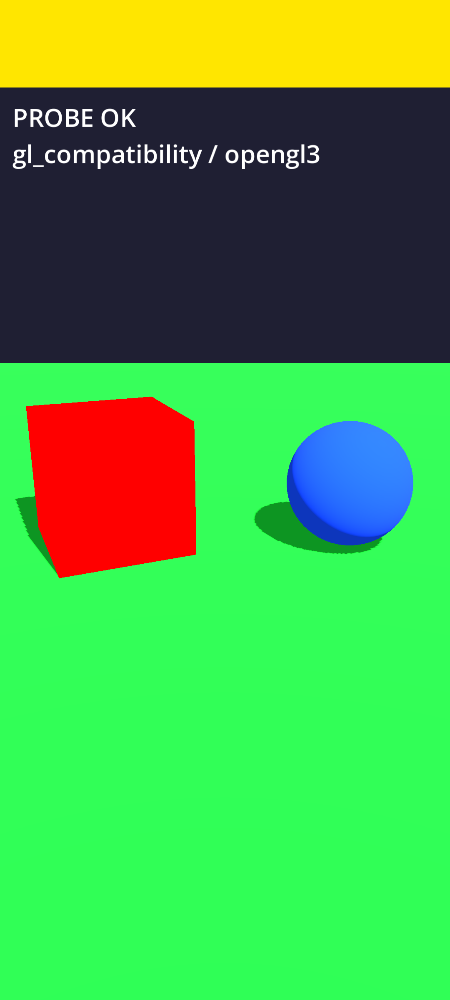
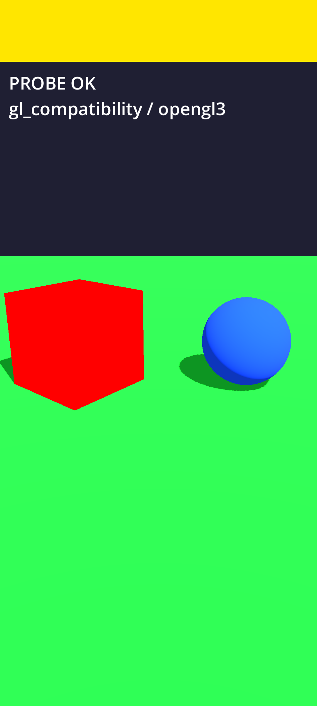
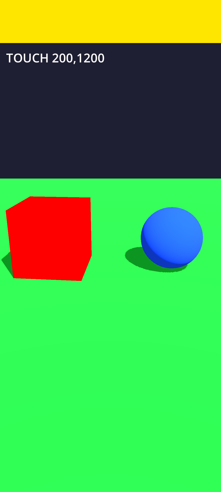
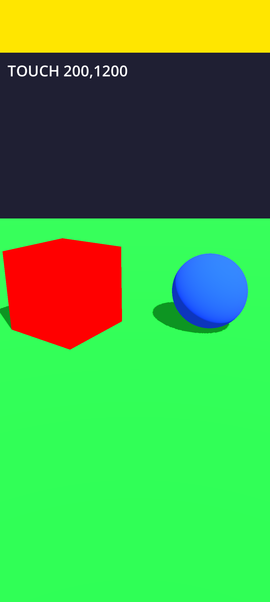
·
result.jsonres-emu-lowlim-lavapipe-r2 — PASS_3D_AND_2D
method=gl_compatibility driver=opengl3 adapter=Android Emulator OpenGL ES Translator (ANGLE (Mesa, Vulkan 1.4.318 (llvmpipe (LLVM 21.0.0 256 bits) (0x00000000)), llvmpipe-25.2.4)) vendor=Google (Google Inc. (Mesa)) api=OpenGL ES 3.1 (OpenGL ES 3.1.0 (ANGLE 2.1.17841 git hash: 5fa2e61da947)) os=Android
OpenGL API OpenGL ES 3.1 (OpenGL ES 3.1.0 (ANGLE 2.1.17841 git hash: 5fa2e61da947)) - Compatibility - Using Device: Google (Google Inc. (Mesa)) - Android Emulator OpenGL ES Translator (ANGLE (Mesa, Vulkan 1.4.318 (llvmpipe (LLVM 21.0.0 256 bits) (0x00000000)), llvmpipe-25.2.4))
pixels: {"black_pct": 0.0, "red_pct": 6.61, "blue_pct": 2.74, "green_pct": 54.3, "yellow_pct": 8.75, "size": [1080, 2400]}
emulator: Pkg.Revision=37.1.11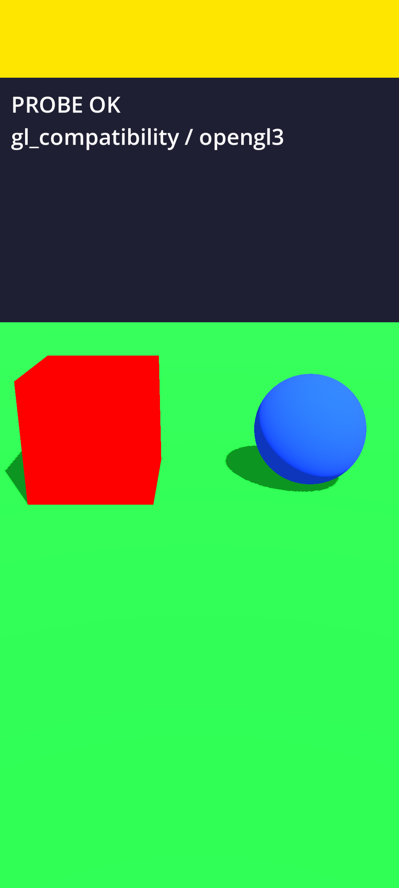
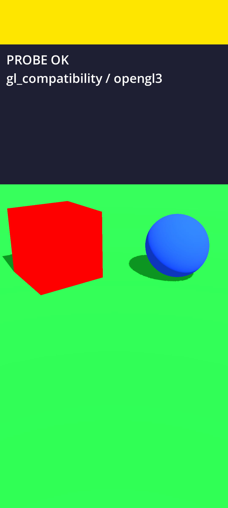
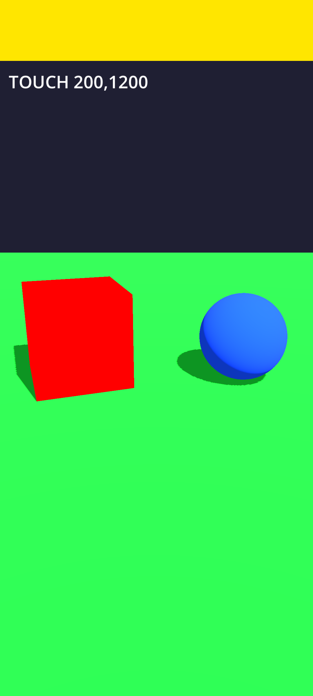
·
result.jsonres-emu-lowlim-lavapipe-r1 — PASS_3D_AND_2D
method=gl_compatibility driver=opengl3 adapter=Android Emulator OpenGL ES Translator (ANGLE (Mesa, Vulkan 1.4.318 (llvmpipe (LLVM 21.0.0 256 bits) (0x00000000)), llvmpipe-25.2.4)) vendor=Google (Google Inc. (Mesa)) api=OpenGL ES 3.1 (OpenGL ES 3.1.0 (ANGLE 2.1.17841 git hash: 5fa2e61da947)) os=Android
OpenGL API OpenGL ES 3.1 (OpenGL ES 3.1.0 (ANGLE 2.1.17841 git hash: 5fa2e61da947)) - Compatibility - Using Device: Google (Google Inc. (Mesa)) - Android Emulator OpenGL ES Translator (ANGLE (Mesa, Vulkan 1.4.318 (llvmpipe (LLVM 21.0.0 256 bits) (0x00000000)), llvmpipe-25.2.4))
pixels: {"black_pct": 0.0, "red_pct": 5.51, "blue_pct": 2.74, "green_pct": 55.41, "yellow_pct": 8.75, "size": [1080, 2400]}
emulator: Pkg.Revision=37.1.11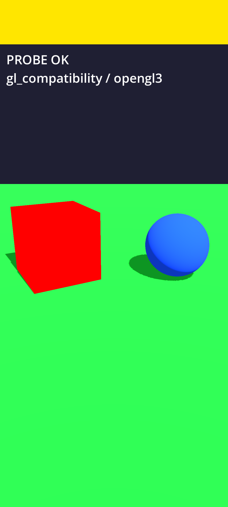
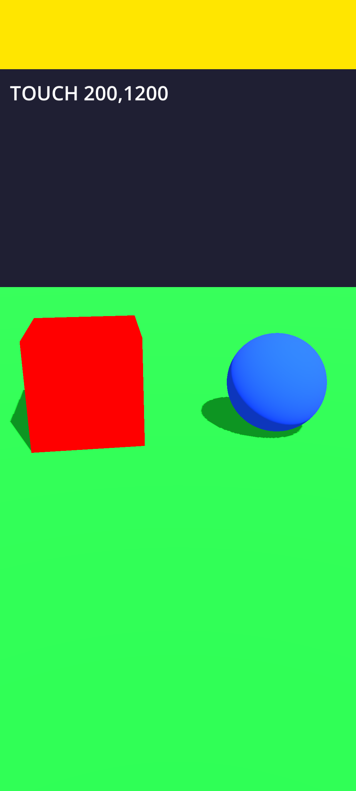
·
result.jsonres-desktop-vulkan-lavapipe — PASS_3D_AND_2D
method=mobile driver=vulkan adapter=llvmpipe (LLVM 20.1.2, 256 bits) vendor=Unknown api=1.4.318 os=Linux
pixels: {"black_pct": 0.0, "red_pct": 5.24, "blue_pct": 2.18, "green_pct": 56.22, "yellow_pct": 10.94, "size": [720, 1280]}
emulator: desktop-xvfblogcat ·
result.jsonres-emu-compat-host-r1 — BLACK_OR_WRONG
method=gl_compatibility driver=opengl3 adapter=Android Emulator OpenGL ES Translator (llvmpipe (LLVM 20.1.2, 256 bits)) vendor=Google (Mesa) api=OpenGL ES 3.1 (4.5 (Core Profile) Mesa 25.2.8-0ubuntu0.24.04.2) os=Android
OpenGL API OpenGL ES 3.1 (4.5 (Core Profile) Mesa 25.2.8-0ubuntu0.24.04.2) - Compatibility - Using Device: Google (Mesa) - Android Emulator OpenGL ES Translator (llvmpipe (LLVM 20.1.2, 256 bits))
pixels: {"black_pct": 0.16, "red_pct": 0.0, "blue_pct": 0.03, "green_pct": 45.83, "yellow_pct": 0.0, "size": [1080, 2400]}
emulator: Pkg.Revision=37.1.11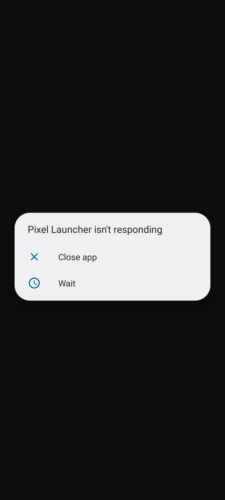
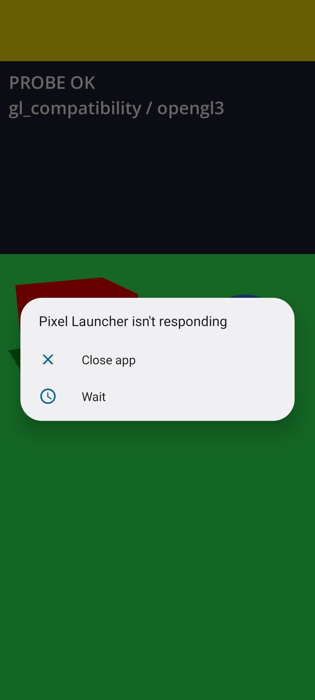
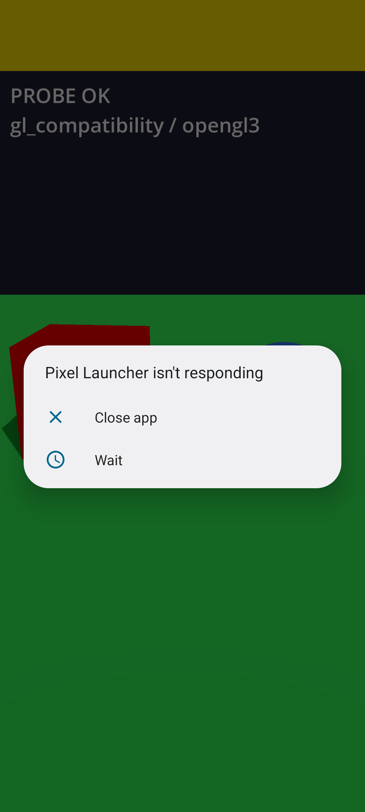
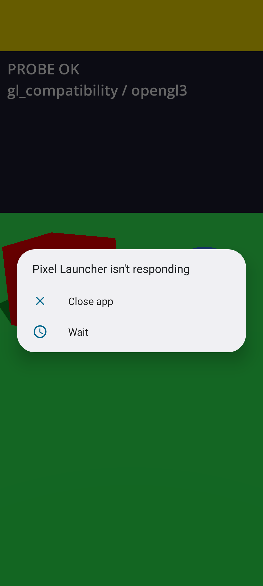
·
result.jsonres-emu-lowlim-host-r1 — BLACK_OR_WRONG
method=gl_compatibility driver=opengl3 adapter=Android Emulator OpenGL ES Translator (llvmpipe (LLVM 20.1.2, 256 bits)) vendor=Google (Mesa) api=OpenGL ES 3.1 (4.5 (Core Profile) Mesa 25.2.8-0ubuntu0.24.04.2) os=Android
OpenGL API OpenGL ES 3.1 (4.5 (Core Profile) Mesa 25.2.8-0ubuntu0.24.04.2) - Compatibility - Using Device: Google (Mesa) - Android Emulator OpenGL ES Translator (llvmpipe (LLVM 20.1.2, 256 bits))
pixels: {"black_pct": 0.16, "red_pct": 0.0, "blue_pct": 0.03, "green_pct": 46.46, "yellow_pct": 0.0, "size": [1080, 2400]}
emulator: Pkg.Revision=37.1.11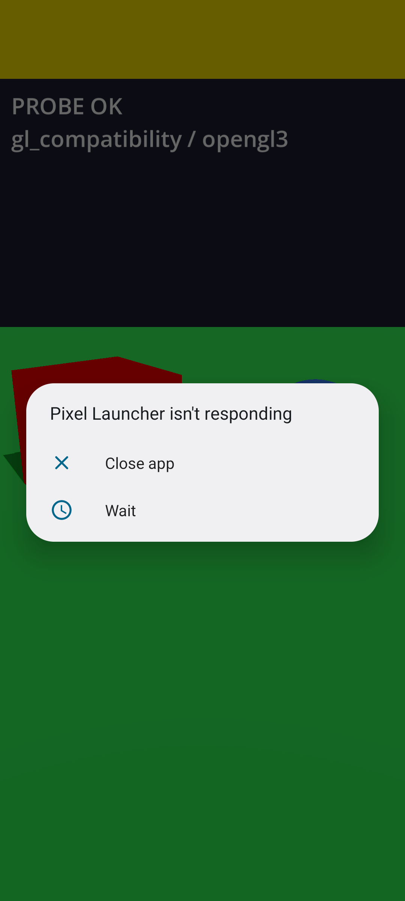
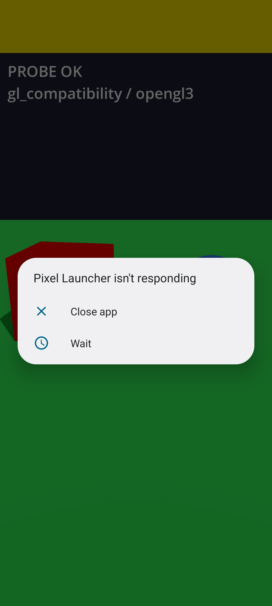
·
result.jsonres-emu-lowlim-host-r2 — BLACK_OR_WRONG
method=gl_compatibility driver=opengl3 adapter=Android Emulator OpenGL ES Translator (llvmpipe (LLVM 20.1.2, 256 bits)) vendor=Google (Mesa) api=OpenGL ES 3.1 (4.5 (Core Profile) Mesa 25.2.8-0ubuntu0.24.04.2) os=Android
OpenGL API OpenGL ES 3.1 (4.5 (Core Profile) Mesa 25.2.8-0ubuntu0.24.04.2) - Compatibility - Using Device: Google (Mesa) - Android Emulator OpenGL ES Translator (llvmpipe (LLVM 20.1.2, 256 bits))
pixels: {"black_pct": 0.16, "red_pct": 0.0, "blue_pct": 0.03, "green_pct": 45.83, "yellow_pct": 0.0, "size": [1080, 2400]}
emulator: Pkg.Revision=37.1.11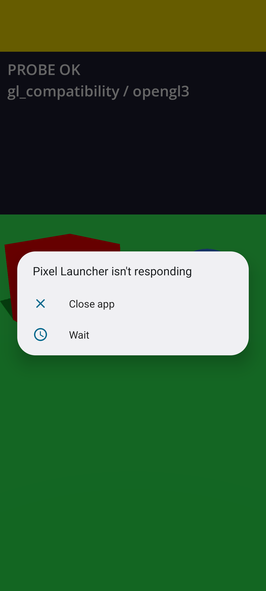
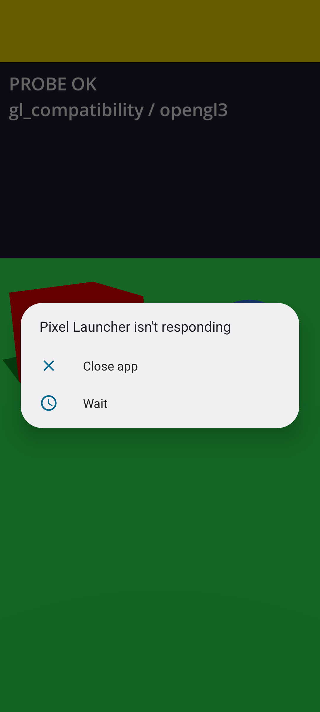
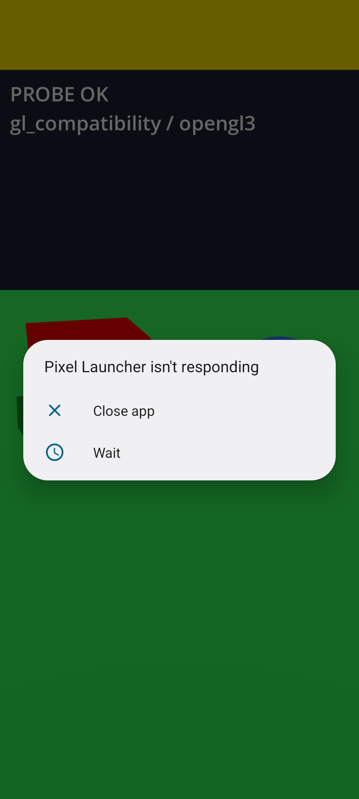
·
result.jsonres-emu-compat-host-r3 — CRASH_OR_DEAD
pixels: {"black_pct": 0.4, "red_pct": 0.6, "blue_pct": 1.25, "green_pct": 0.29, "yellow_pct": 0.27, "size": [1080, 2400]}
emulator: Pkg.Revision=37.1.11logcat ·
result.jsonres-emu-compat-lavapipe-r1 — CRASH_OR_DEAD
OpenGL API OpenGL ES 3.1 (OpenGL ES 3.1.0 (ANGLE 2.1.17841 git hash: 5fa2e61da947)) - Compatibility - Using Device: Google (Google Inc. (Mesa)) - Android Emulator OpenGL ES Translator (ANGLE (Mesa, Vulkan 1.4.318 (llvmpipe (LLVM 21.0.0 256 bits) (0x00000000)), llvmpipe-25.2.4))
pixels: {"black_pct": 0.4, "red_pct": 0.6, "blue_pct": 1.25, "green_pct": 0.29, "yellow_pct": 0.27, "size": [1080, 2400]}
emulator: Pkg.Revision=37.1.11logcat ·
result.jsonres-emu-lowlim-lavapipe-r3 — CRASH_OR_DEAD
pixels: {"black_pct": 0.4, "red_pct": 0.6, "blue_pct": 1.25, "green_pct": 0.29, "yellow_pct": 0.27, "size": [1080, 2400]}
emulator: Pkg.Revision=37.1.11logcat ·
result.json